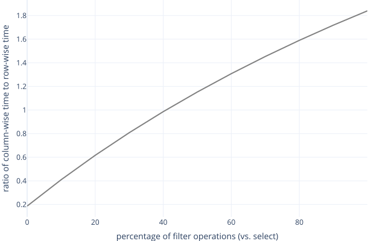

Performance Profiling
- Create abstract classes to specify interfaces.
- Store two-dimensional data as rows or as columns.
- Use reflection to match data to function parameters.
- Measure performance to evaluate engineering tradeoffs.
One peril of publishing a book online is obsessing over analytics. How many people visited the site today? Which pages did they look at, and for how long? Whether we use Excel, SQL, or Python, we will almost certainly be analyzing tables with named columns and multiple rows. Such tables are called dataframes, and their performance is important when we are working with large data sets. This chapter therefore implements dataframes in two ways and shows how to compare their performance.
Options
To start, let's create an abstract class that defines the methods our dataframe classes will support. This class requires concrete classes to implement the methods shown below:
class DataFrame:
def ncol(self):
"""Report the number of columns."""
def nrow(self):
"""Report the number of rows."""
def cols(self):
"""Return the set of column names."""
def eq(self, other):
"""Check equality with another dataframe."""
def get(self, col, row):
"""Get a scalar value."""
def select(self, *names):
"""Select a named subset of columns."""
def filter(self, func):
"""Select a subset of rows by testing values."""
Docstrings Are Enough
Every method in Python needs a body,
so many programmers will write pass (Python's "do nothing" statement).
However,
a docstring also counts as a body,
so if we write those (which we should)
there's no need to write pass.
For our first usable implementation,
we will derive a class DfRow that uses
row-wise storage
(Figure 1).
The dataframe is stored as a list of dictionaries,
each of which represents a row.
All of the dictionaries must have the same keys
so that the concept of "column" is meaningful,
and the values associated with a particular key must all have the same type.
Our second implementation,
DfCol,
will use column-wise storage
(Figure 2).
Each column is stored as a list of values,
all of which are of the same type.
The dataframe itself is a dictionary of such lists,
all of which have the same length
so that there are no holes in any of the rows.
How we store the data determines which methods are easy to implement
and which are hard,
and which are fast or slow.
Row-Wise Storage
We start by deriving DfRow from DataFrame and writing its constructor,
which takes a list of dictionaries as an argument,
checks that they're consistent with each other,
and saves them:
from df_base import DataFrame
from util import dict_match
class DfRow(DataFrame):
def __init__(self, rows):
assert len(rows) > 0
assert all(dict_match(r, rows[0]) for r in rows)
self._data = rows
The helper function to check that a bunch of dictionaries all have the same keys and the same types of values associated with those keys is:
def dict_match(d, prototype):
if set(d.keys()) != set(prototype.keys()):
return False
return all(isinstance(d[k], prototype[k]) for k in d)
Notice that DfRow's constructor compares all of the rows against the first row.
Doing this means that we can't create an empty dataframe,
i.e.,
one that has no rows.
This restriction wasn't part of our original design:
it's an accident of implementation that might surprise our users.
It's OK not to fix this while we're prototyping,
but we will look at ways to address it in the exercises.
Four of the methods required by DataFrame are easy to implement
on top of row-wise storage,
though once again our implementation assumes there is at least one row:
def ncol(self):
return len(self._data[0])
def nrow(self):
return len(self._data)
def cols(self):
return set(self._data[0].keys())
def get(self, col, row):
assert col in self._data[0]
assert 0 <= row < len(self._data)
return self._data[row][col]
Checking equality is also relatively simple. Two dataframes are the same if they have exactly the same columns and the same values in every column:
def eq(self, other):
assert isinstance(other, DataFrame)
for (i, row) in enumerate(self._data):
for key in row:
if key not in other.cols():
return False
if row[key] != other.get(key, i):
return False
return True
Notice that we use other.cols() and other.get()
rather than reaching into the other dataframe.
We are planning to implement dataframes in several different ways,
and we might want to compare instances of those different implementations.
Since they might have different internal data structures,
the only safe way to do this is
to rely on the interface defined in the base class.
Our final operations are selection,
which returns a subset of the original dataframe's columns,
and filtering,
which returns a subset of its rows.
Since we don't know how many columns the user might want,
we give the select method a single parameter *names
that will capture zero or more positional arguments.
We then build a new list of dictionaries
that only contain the fields with those names (Figure 3):
def select(self, *names):
assert all(n in self._data[0] for n in names)
rows = [{key: r[key] for key in names} for r in self._data]
return DfRow(rows)
We now need to decide how to filter rows.
Typical filtering conditions include,
"Keep rows where red is non-zero,"
"Keep rows where red is greater than green,"
and, "Keep rows where red+green is within 10% of blue."
Rather than trying to anticipate every possible rule,
we require users to define functions
whose parameters match the names of the table's columns.
For example,
if we have this test fixture:
def odd_even():
return DfRow([{"a": 1, "b": 3}, {"a": 2, "b": 4}])
then we should be able to write this test:
def test_filter():
def odd(a, b):
return (a % 2) == 1
df = odd_even()
assert df.filter(odd).eq(DfRow([{"a": 1, "b": 3}]))
We can implement this by using ** to spread the row
across the function's parameters (Chapter 2).
If there are keys in the row that don't match parameters in the function
or vice versa,
Python will throw an exception,
but that's probably what we want.
Using this,
the implementation of DfRow.filter is:
def filter(self, func):
result = [r for r in self._data if func(**r)]
return DfRow(result)
Notice that the dataframe created by filter
re-uses the rows of the original dataframe (Figure 4).
This is safe and efficient as long as dataframes are immutable,
i.e.,
as long as their contents are never changed in place.
Most dataframe libraries work this way:
while recycling memory can save a little time,
it usually also makes bugs much harder to track down.
Column-Wise Storage
Having done all of this thinking, our column-wise dataframe class is somewhat easier to write. We start as before with its constructor:
from df_base import DataFrame
from util import all_eq
class DfCol(DataFrame):
def __init__(self, **kwargs):
assert len(kwargs) > 0
assert all_eq(len(kwargs[k]) for k in kwargs)
for k in kwargs:
assert all_eq(type(v) for v in kwargs[k])
self._data = kwargs
and use a helper function all_eq to check that
all of the values in any column have the same types:
def all_eq(*values):
return (not values) or all(v == values[0] for v in values)
One Allowable Difference
Notice that DfCol's constructor does not have the same signature
as DfRow's.
At some point in our code we have to decide which of the two classes to construct.
If we design our code well,
that decision will be made in exactly one place
and everything else will rely solely on the common interface defined by DataFrame.
But since we have to type a different class name at the point of construction,
it's OK for the constructors to be different.
The four methods that were simple to write for DfRow
are equally simple to write for DfCol,
though once again our prototype implementation accidentally disallows empty dataframes:
def ncol(self):
return len(self._data)
def nrow(self):
n = list(self._data.keys())[0]
return len(self._data[n])
def cols(self):
return set(self._data.keys())
def get(self, col, row):
assert col in self._data
assert 0 <= row < len(self._data[col])
return self._data[col][row]
As with DfRow,
the method that checks equality relies on the internal details of its own class
but uses the interface defined by DataFrame to access the other object:
def eq(self, other):
assert isinstance(other, DataFrame)
for n in self._data:
if n not in other.cols():
return False
for i in range(len(self._data[n])):
if self.get(n, i) != other.get(n, i):
return False
return True
To select columns, we pick the ones named by the caller and use them to create a new dataframe. Again, this recycles the existing storage (Figure 5):
def select(self, *names):
assert all(n in self._data for n in names)
return DfCol(**{n: self._data[n] for n in names})
Finally, we need to filter the rows of a column-wise dataframe. Doing this is complex: since values are stored in columns, we have to extract the ones belonging to each row to pass them into the user-defined filter function (Figure 6). And if that wasn't enough, we want to do this solely for the columns that the user's function needs.

For now,
we will solve this problem
by requiring the user-defined filter function to define parameters
to match all of the dataframe's columns
regardless of whether they are used for filtering or not.
We will then build a temporary dictionary with all the values in a "row"
(i.e.,
the corresponding values across all columns)
and use ** to spread it across the filter function.
Appendix B looks at a safer, but more complex, way to do this.
def filter(self, func):
result = {n: [] for n in self._data}
for i in range(self.nrow()):
args = {n: self._data[n][i] for n in self._data}
if func(**args):
for n in self._data:
result[n].append(self._data[n][i])
return DfCol(**result)
Time to write some tests. This one checks that we can construct a dataframe with some values:
def test_construct_with_two_pairs():
df = DfCol(a=[1, 2], b=[3, 4])
assert df.get("a", 0) == 1
assert df.get("a", 1) == 2
assert df.get("b", 0) == 3
assert df.get("b", 1) == 4
while this one checks that filter works correctly:
def test_filter():
def odd(a, b):
return (a % 2) == 1
df = DfCol(a=[1, 2], b=[3, 4])
assert df.filter(odd).eq(DfCol(a=[1], b=[3]))
Performance
Our two implementations of dataframes have identical interfaces, so how can we choose which to use?
Transactions vs. Analysis
Regardless of data volumes, different storage schemes are better (or worse) for different kinds of work. Online transaction processing (OLTP) refers to adding or querying individual records, such as online sales. Online analytical processing (OLAP), on the other hand, processes selected columns of a table in bulk to do things like find averages over time. Row-wise storage is usually best for OLTP, but column-wise storage is better suited for OLAP. If data volumes are large, data engineers will sometimes run two databases in parallel, using batch processing jobs to copy new or updated records from the OLTP databases over to the OLAP database.
To compare the speed of these classes,
let's write a short program to create dataframes of each kind
and time how long it takes to select their columns and filter their rows.
To keep things simple,
we will create dataframes whose columns are called label_1, label_2, and so on,
and whose values are all integers in the range 0–9.
A thorough set of benchmarks
would create columns with other datatypes as well,
but this example is enough to illustrate the technique.
RANGE = 10
def make_col(nrow, ncol):
def _col(n, start):
return [((start + i) % RANGE) for i in range(n)]
fill = {f"label_{c}": _col(nrow, c) for c in range(ncol)}
return DfCol(**fill)
def make_row(nrow, ncol):
labels = [f"label_{c}" for c in range(ncol)]
def _row(r):
return {
c: ((r + i) % RANGE) for (i, c) in enumerate(labels)
}
fill = [_row(r) for r in range(nrow)]
return DfRow(fill)
To time filter,
we arbitrarily decide to keep rows with an even value in the first column:
FILTER = 2
def time_filter(df):
def f(label_0, **args):
return label_0 % FILTER == 1
start = time.time()
df.filter(f)
return time.time() - start
Since DfCol and DfRow derive from the same base class,
time_filter doesn't care which we give it.
Again,
if we were doing this for real,
we would look at actual programs
to see what fraction of rows filtering usually kept and simulate that.
To time select,
we arbitrarily decide to keep one-third of the columns:
SELECT = 3
def time_select(df):
indices = [i for i in range(df.ncol()) if ((i % SELECT) == 0)]
labels = [f"label_{i}" for i in indices]
start = time.time()
df.select(*labels)
return time.time() - start
Finally,
we write a function that takes a list of strings like 3x3 or 100x20,
creates dataframes of each size,
times operations,
and reports the results.
We call this function sweep because
executing code multiple times with different parameters to measure performance
is called parameter sweeping:
def sweep(sizes):
result = []
for (nrow, ncol) in sizes:
df_col = make_col(nrow, ncol)
df_row = make_row(nrow, ncol)
times = [
time_filter(df_col),
time_select(df_col),
time_filter(df_row),
time_select(df_row),
]
result.append([nrow, ncol, *times])
return result
The results are shown in Table 1 and Figure 7. For a \( 1000 \times 1000 \) dataframe, selection is over 250 times faster with column-wise storage than with row-wise, while filtering is 1.8 times slower.
| nrow | ncol | filter col | select col | filter row | select row |
|---|---|---|---|---|---|
| 10 | 10 | 8.87e-05 | 7.70e-05 | 4.41e-05 | 2.50e-05 |
| 100 | 100 | 0.00275 | 4.10e-05 | 0.00140 | 8.76e |
| 1000 | 1000 | 0.146 | 0.000189 | 0.0787 | 0.0508 |
| 10000 | 10000 | 19.0 | 0.00234 | 9.97 | 5.57 |

We can get much more insight by profiling our code
using Python cProfile module,
which collects detailed information on how long each function runs
and reports the result:
python -m cProfile --sort=tottime \
timing.py --silent 10x10 50x50 100x100 500x500 1000x1000
3007281 function calls (3003108 primitive calls) in 2.120 seconds
Ordered by: internal time
ncalls tottime percall cumtime percall filename:lineno(function)
2319840 0.671 0.000 0.671 0.000 util.py:10(<genexpr>)
5 0.271 0.054 0.521 0.104 df_col.py:50(filter)
1660 0.261 0.000 0.261 0.000 timing.py:20(<dictcomp>)
8066/3916 0.213 0.000 1.056 0.000 {built-in method builtins.all}
1660 0.191 0.000 0.191 0.000 df_col.py:53(<dictcomp>)
The profiler's output tells us
the number of times each function or method was called,
the total time spent in those calls (which is what we care about most),
the time spent per call,
and the cumulative time spent in that call and all the things it calls.
We can see right away that the dict_match function
that checks the consistency of the rows in a row-oriented dataframe
is eating up a lot of time.
It's only called in the constructor,
but since we're constructing a new dataframe for each filter and select,
removing that safety check would speed things up.
Looking down a little further,
the dictionary comprehension in DfCol.filter takes a lot of time as well.
That isn't surprising:
we're copying the values out of the columns into a temporary dictionary
for every row when we filter,
and building all those temporary dictionaries adds up to a lot of time.
Summary
Figure 8 summarizes the key ideas introduced in this chapter. The most important is that experiments can help us decide how to implement key features of our software, but the results of those experiments depend on exactly what we measure. Good software designers collect and analyze data all the time to find out whether one website design works better than another [Kohavi2020] or to improve the performance of CPUs [Patterson2017]. A few simple experiments like these can save weeks or months of misguided effort.
Exercises
More Efficient Filtering
Derive a class from DfCol and override its filter method
so that the user-defined filtering functions take zero or more columns
and a row index called i_row as parameters
and return True or False to signal whether the row passes the test.
-
How much faster does this make filtering?
-
When would it be useful for filtering functions to take no column at all as parameters?
Empty Dataframes
An empty dataframe is as reasonable and as useful as an empty string or an empty list.
DfCol can represent this,
but DfRow cannot:
if the list of dictionaries is empty,
we cannot ask for column names.
Derive another dataframe class from DF that uses row-wise storage
but can represent a dataframe with no rows.
Unified Constructors
Modify the constructors of DfRow and DfCol to have the same signatures.
Where and why might this be useful?
Fixture Functions
Read the documentation for the @fixture decorator in pytest
and modify the tests in this chapter to use it.
Using Arrays
Derive another dataframe class from DF
that uses Python's array module for column-wise storage.
How does it perform compared to other implementations?
Crossover
-
At what ratio of filter operations to select operations are
DfRowandDfColequally fast? (Your answer may depend on the size of the dataframe.) -
How does the relative performance of the two classes change if tables have a fixed number of columns (such as 10 or 20) but an increasing numbers of rows? Is this scenario more realistic?
Conversion
Write a function to convert a DfRow into a DfCol
and another to do the opposite.
Which one is faster?
How does the difference in performance depend on
the size and shape of the dataframes being converted?
Filtering by Strings
Modify the comparison of filter and select to work with tables that contain columns of strings instead of columns of numbers and see how that changes performance. For testing, create random 4-letter strings using the characters A-Z and then filter by:
- an exact match,
- strings starting with a specific character, and
- strings that contain a specific character.
Inspection
Rewrite DfCol.filter using Python's inspect module
so that users' filtering functions
only need to define parameters for the columns of interest.
Join Performance
A join combines data from two tables based on matching keys. For example, if the two tables are:
| Key | Left |
|---|---|
| A | a1 |
| B | b1 |
| C | c1 |
and:
| Key | Right |
|---|---|
| A | a2 |
| A | a3 |
| B | b2 |
then the join is:
| Key | Left | Right |
|---|---|---|
| A | a1 | a2 |
| A | a1 | a3 |
| B | b1 | b2 |
Write a test to compare the performance of row-wise vs. column-wise storage when joining two tables based on matching numeric keys. Does the answer depend on the fraction of keys that match?
Join Optimization
The simplest way to join two tables is to look for matching keys using a double loop. An alternative is to build an index for each table and then use it to construct matches. For example, suppose the tables are:
| Key | Left |
|---|---|
| A | a1 |
| B | b1 |
| C | c1 |
and:
| Key | Right |
|---|---|
| A | a2 |
| A | a3 |
| B | b2 |
The first step is to create a Map showing where each key is found in the first table:
{"A": [0], "B": [1], "C": [2]}
The second step is to create a similar Map for the second table:
{"A": [0, 1], "B": [2]}
We can then loop over the keys in one of the maps, look up values in the second map, and construct all of the matches.
Write a function that joins two tables this way. Is it faster or slower than using a double loop? How does the answer depend on the number of keys and the fraction that match?